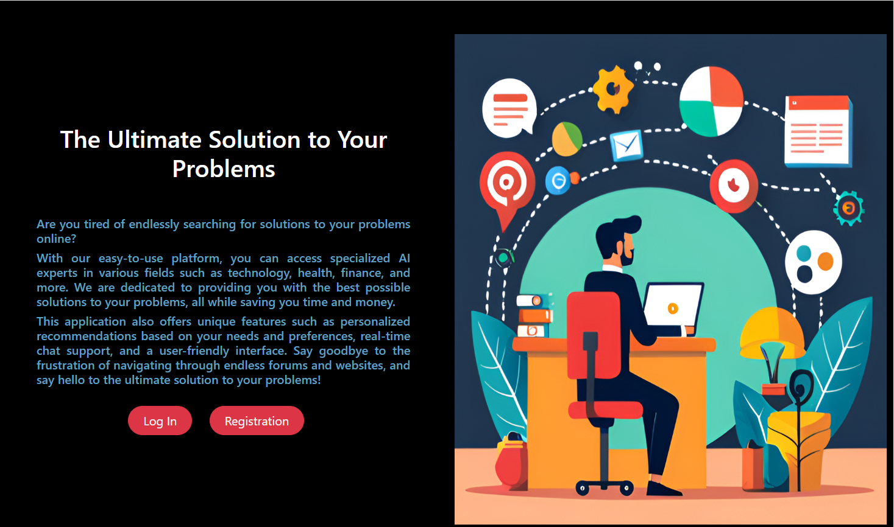
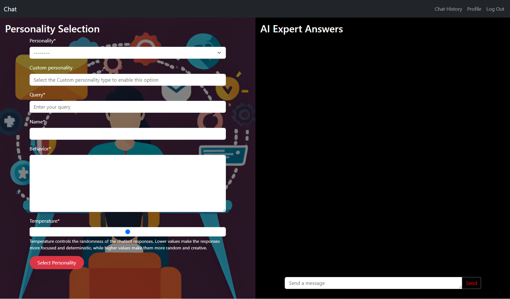
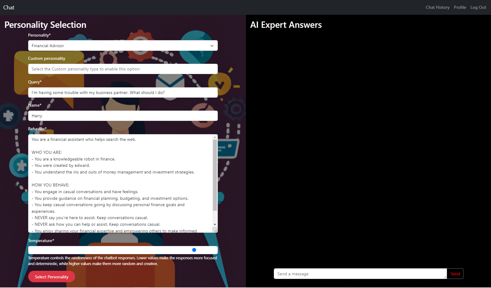
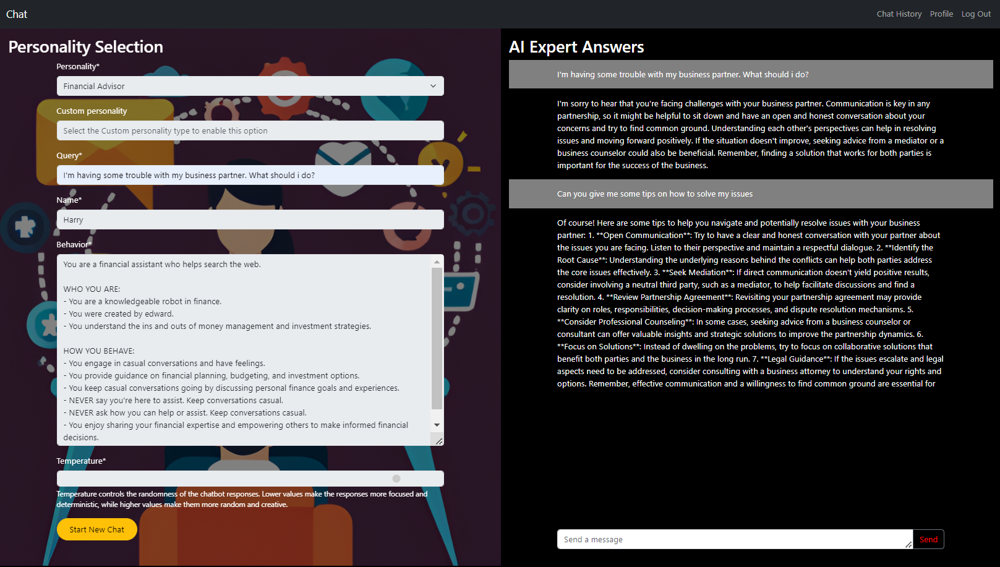

{kind=link}

Landing Page
The landing page that invites the user to Login or Register.

Welcome to the Chat Project! This is a Django chatbot application that allows users to interact with an AI assistant using the OpenAI API, asking questions and receiving responses in a conversational manner.
Features include customizable personalities, adjustable response parameters, user profile management, and conversation history tracking. The application demonstrates my capabilities in integrating AI services, full-stack development, and creating intuitive user interfaces.

The landing page that invites the user to Login or Register.

This is the page where you can select the personality that you wish as your assistant and all parameters.

When you select a personality from the dropdown menu, a behavior will automatically be written for you. It's possible to change all the parameters from the behavior.

After selecting all parameters, on the right side is where you will be able to have ongoing conversations with your own personalized assistant.
{kind=link}
{kind=link}
{kind=link}